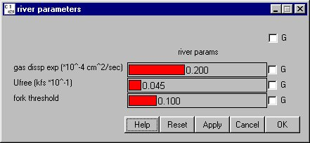

River Parameters
Selecting Reservoir River Parameters opens a window for setting several parameters that are applied throughout the river system and do not depend on species or day. The model is fairly sensitive to changes in these parameters; caution is recommended when making changes to these parameters.
River Parameters opens a window for setting several parameters that are applied throughout the river system and do not depend on species or day. The model is fairly sensitive to changes in these parameters; caution is recommended when making changes to these parameters.
- gas dissp exp: An exponent controlling degassing of total dissolved gas from the water (*10^-4cm^2/sec). This depends on river velocity and depth.
- Ufree: River velocity in free flowing portions of river (in kfs*10^-1).
- fork threshold: Defines how big a river fork must be before elevation changes propagate up it.
Note. In Monte Carlo Mode, it is possible to read the river elevation (at selected dams and reaches) from a flow archive file. If this is done, the elevation changes are then propagated upriver under certain rules. One of the rules concerns how to handle a fork. As COMPASS propagates an elevation change upriver, it will come to a place where the river forks. COMPASS always propagates up the larger of the two forks; however, it may or may not propagate up the smaller as well, depending on the fork threshold and the ratio of the flow max value for the smaller fork to the flow max value for the reach below the fork. For example, suppose the flow max for fork A is 80, fork B is 20, and flow max for the river below the fork is 100. If the fork threshold is .19999999 or less, the model will propagate elevation changes up both forks. If the fork threshold is .2 or more, COMPASS will only propagate up fork A (the main branch).
This is a Slider Input window.

River parameters window